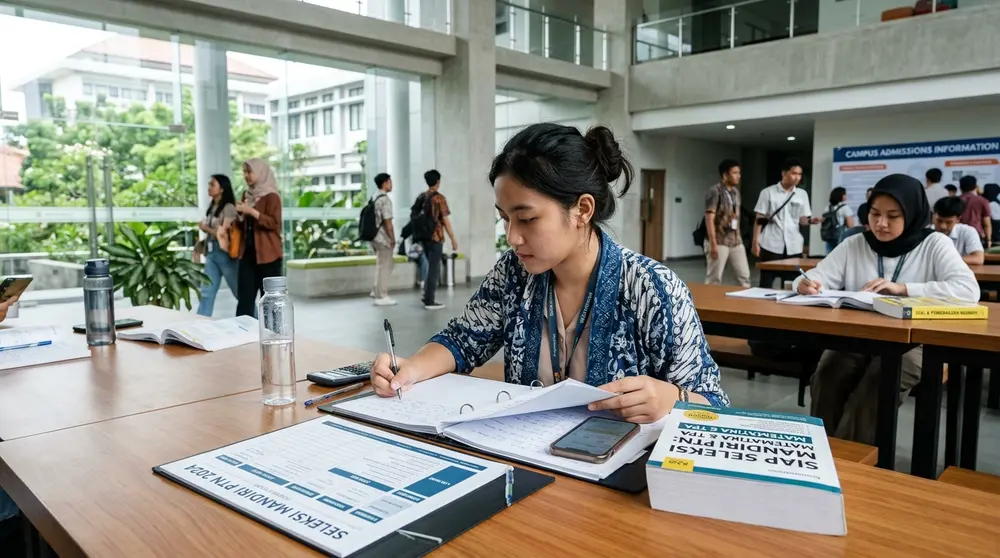

Jadwal Seleksi Mandiri PTN 2026: Panduan Lengkap Tanggal, Syarat, dan Cara Daftar

Jadwal seleksi mandiri PTN 2026 sebagian besar jatuh setelah pengumuman SNBT 25 Mei 2026, dengan pendaftaran Mei sampai Juni dan hasil seleksi hingga awal Juli.
Ringkasan Inti
- Seleksi mandiri PTN adalah jalur masuk perguruan tinggi negeri yang jadwal, metode, dan biayanya ditetapkan oleh masing-masing kampus secara independen.
- Hasil SNBT 2026 diumumkan pada 25 Mei 2026, dan banyak PTN membuka atau menutup pendaftaran mandiri pada rentang Mei sampai Juni 2026.
- SIMAK UI S1 Reguler dan Vokasi 2026 membuka pendaftaran 8 Mei sampai 5 Juni 2026, ujian 14 Juni 2026, dan pengumuman paling lambat 1 Juli 2026 dengan biaya pendaftaran Rp650.000.
- Universitas Indonesia mengalokasikan 50 persen daya tampung untuk jalur mandiri, sedangkan SNBP 20 persen dan SNBT 30 persen.
- Tanggal setiap kampus berbeda, sehingga verifikasi di laman resmi PTN tujuan wajib dilakukan sebelum mendaftar.
- Apa Itu Seleksi Mandiri PTN?
- Linimasa Jadwal Seleksi Mandiri 2026
- Jadwal SNBT Patokan Utama
- Jadwal SIMAK UI 2026
- Jalur Mandiri UGM & Unair
- Beda SNBP vs SNBT vs Mandiri
- Syarat Umum Pendaftaran
- 6 Langkah Cara Mendaftar
- Rincian Biaya Seleksi Mandiri
- Kesalahan Umum yang Harus Dihindari
- Strategi Memilih Jalur yang Tepat
- Pertanyaan yang Sering Diajukan (FAQ)
Apa itu seleksi mandiri PTN?
Seleksi mandiri PTN adalah jalur penerimaan mahasiswa baru yang dikelola langsung oleh masing-masing perguruan tinggi negeri, terpisah dari SNBP dan SNBT yang diatur secara nasional.
Seleksi mandiri PTN dirancang untuk memberi kursi tambahan di perguruan tinggi negeri di luar jalur nasional. Setiap kampus menentukan sendiri metode penilaian, jadwal, kuota, dan biaya pendaftarannya. Metode yang dipakai bervariasi, mulai dari ujian tulis berbasis komputer, penilaian nilai UTBK-SNBT, penilaian rapor tanpa tes, sampai penilaian bakat dan prestasi.
Sistem Seleksi Nasional Penerimaan Mahasiswa Baru (SNPMB) mengelompokkan jalur masuk PTN ke dalam tiga jenis utama, yaitu SNBP, SNBT, dan seleksi mandiri oleh masing-masing PTN. Peserta yang lolos SNBP 2026 dikunci oleh sistem sehingga tidak dapat mendaftar UTBK-SNBT 2026. Aturan keikutsertaan seleksi mandiri bagi peserta yang sudah lolos SNBP berbeda di tiap kampus, sehingga buku panduan resmi kampus tujuan perlu dibaca lebih dulu.
Seleksi mandiri cocok untuk siswa yang belum lolos SNBP atau SNBT, lulusan gap year, dan calon mahasiswa yang menargetkan program studi dengan metode seleksi khusus. Batasan jalur ini terletak pada biaya pendaftaran dan biaya kuliah yang umumnya lebih tinggi daripada jalur nasional, serta jadwal yang berbeda-beda. Risiko terbesarnya adalah pendaftaran terlewat karena peserta mengira semua PTN memakai tanggal yang sama.
Kapan jadwal seleksi mandiri PTN 2026 berlangsung?
Jadwal seleksi mandiri PTN 2026 berbeda di setiap kampus, tetapi pendaftaran umumnya terjadi antara April dan Juni, sementara pengumuman tersebar dari Mei hingga awal Agustus.
Rentang tersebut terbentuk karena sebagian PTN menggelar seleksi mandiri sebelum SNBT selesai, sedangkan PTN lain menunggu hasil UTBK-SNBT keluar. Pusat Studi Jatim merangkum pola umum pendaftaran Juni sampai Juli, ujian Juli sampai Agustus, dan pengumuman Juli sampai Agustus 2026, tetapi tanggal pasti tetap ditentukan oleh tiap kampus.
Apa jadwal SNBT 2026 yang menjadi patokan seleksi mandiri?
SNBT 2026 menjadi patokan karena banyak PTN memakai nilai UTBK-SNBT untuk seleksi mandiri, dengan pelaksanaan UTBK pada 21 sampai 30 April 2026 dan pengumuman pada 25 Mei 2026.
Berdasarkan jadwal SNPMB yang dimuat SELMA UB dan Metro TV, tahapan SNBT 2026 adalah sebagai berikut:
- Registrasi akun SNPMB siswa: 12 Januari sampai 7 April 2026
- Pendaftaran UTBK-SNBT: 25 Maret sampai 7 April 2026
- Pembayaran biaya UTBK: 25 Maret sampai 8 April 2026
- Unduh kartu peserta UTBK-SNBT: 11 sampai 15 April 2026
- Pelaksanaan UTBK: 21 sampai 30 April 2026, dua sesi per hari
- Pengumuman hasil SNBT: 25 Mei 2026 pukul 15.00 WIB
- Unduh sertifikat UTBK: 2 Juni sampai 31 Juli 2026
Masa unduh sertifikat UTBK yang berlangsung sampai 31 Juli 2026 sangat penting bagi peserta yang memakai nilai UTBK untuk mendaftar seleksi mandiri.
Kapan jadwal SIMAK UI 2026?
SIMAK UI S1 Reguler dan Vokasi 2026 membuka pendaftaran pada 8 Mei sampai 5 Juni 2026, menggelar ujian pada 14 Juni 2026, dan mengumumkan hasil paling lambat 1 Juli 2026.
Menurut laman resmi simak.ui.ac.id, Universitas Indonesia juga membuka jalur lain pada tahun yang sama. SIMAK UI S1 Kelas Internasional Gelombang 2 dan SIMAK UI S1 RPL membuka pendaftaran 4 sampai 30 Mei 2026 dengan ujian 7 Juni 2026 dan pengumuman paling lambat 1 Juli 2026. Pendaftaran dilakukan melalui enrollment.ui.ac.id.
Ujian SIMAK UI S1 Reguler dan Vokasi 2026 berlangsung secara daring dalam dua sesi, yaitu pukul 09.00 sampai 12.00 WIB dan pukul 14.00 sampai 17.00 WIB. Peserta mengunduh konfigurasi Safe Exam Browser mulai 8 Juni 2026 dan mengikuti simulasi ujian pada 11 Juni 2026. Profil lengkap kampus tersebut tersedia di panduan profil Universitas Indonesia dan syarat masuknya.
Kapan seleksi mandiri UGM dan Unair 2026 dibuka?
Universitas Gadjah Mada membuka beberapa jalur seleksi mandiri dengan pendaftaran dari April sampai awal Juni 2026, sedangkan Universitas Airlangga menutup pendaftaran Mandiri UTBK Plus pada 8 Juni 2026.
Beritasatu mencatat bahwa UGM menyelenggarakan jalur nontes rapor pada 1 sampai 17 April 2026, jalur tes pada 4 sampai 29 Mei 2026, serta jalur nontes UTBK dan talenta pada 26 Mei sampai 5 Juni 2026. Pengumuman UGM tersebar pada 28 Mei sampai 19 Juni 2026 sesuai jalurnya.
Info Pendidikan BIC mencatat bahwa pendaftaran Mandiri UTBK Plus Universitas Airlangga ditutup pada 8 Juni 2026 pukul 17.00 WIB berdasarkan pengumuman PPMB Unair. Calon peserta yang mengincar kampus lain sebaiknya membandingkan estimasi passing grade di halaman akademik dan daya tampung prodi sebelum menentukan pilihan.
Bagaimana jadwal seleksi mandiri konsorsium dan PTN lain?
Konsorsium BKS-PTN Barat membuka SMMPTN-Barat 2026 pada 4 Mei sampai 11 Juni 2026, sedangkan Universitas Negeri Malang membuka Gelombang 2 skor UTBK pada 30 Mei sampai 12 Juni 2026.
Menurut rekap Info Pendidikan BIC, SMMPTN-Barat 2026 melibatkan 28 PTN dengan biaya registrasi Rp375.000. Seleksi Mandiri Universitas Negeri Malang Gelombang 2 berbasis skor UTBK-SNBT 2026 dengan biaya registrasi Rp300.000. Peserta yang menjadikan seleksi mandiri sebagai cadangan sebaiknya mencatat tanggal penutupan semua pilihan dalam satu kalender pribadi.
Apa bedanya seleksi mandiri dengan SNBP dan SNBT?
SNBP menilai prestasi rapor dan portofolio, SNBT menilai hasil UTBK secara nasional, sedangkan seleksi mandiri PTN memakai metode, jadwal, dan biaya yang ditetapkan tiap kampus.
| Aspek | SNBP | SNBT | Seleksi Mandiri PTN |
|---|---|---|---|
| Dasar Penilaian | Nilai rapor dan prestasi | Hasil tes UTBK-SNBT | Ujian tulis kampus, nilai UTBK, rapor, atau portofolio bakat |
| Pengelola | Panitia nasional SNPMB | Panitia nasional SNPMB | Masing-masing PTN atau konsorsium wilayah |
| Jadwal Seleksi | Serentak nasional (Jan–Feb) | Serentak nasional, UTBK 21-30 April 2026 | Bervariasi di tiap kampus (Mei–Juli 2026) |
| Alokasi Kuota (Contoh UI) | Minimal 20% | Minimal 30% | Maksimal 50% daya tampung |
Universitas Indonesia menyatakan bahwa jalur nasionalnya menyediakan 50 persen dari total daya tampung, dengan rincian 20 persen melalui SNBP dan 30 persen melalui SNBT. Sisanya, yaitu 50 persen, dialokasikan untuk jalur mandiri. Pernyataan tersebut dimuat di ui.ac.id pada 2025 dan menjadi gambaran pembagian kuota di salah satu PTN terbesar.
Perbedaan paling praktis ada pada biaya dan fleksibilitas. Seleksi mandiri membuka kesempatan kedua, tetapi biaya pendaftarannya dibayar langsung ke kampus dan jumlahnya bervariasi.
Apa syarat umum seleksi mandiri PTN?
Syarat umum seleksi mandiri PTN meliputi status lulusan atau siswa tingkat akhir SMA/SMK/MA, akun pendaftaran, dokumen identitas, dan nilai UTBK atau hasil tes kampus.
Syarat spesifik berbeda menurut kampus, program studi, dan jalur. Jalur berbasis skor UTBK mewajibkan sertifikat UTBK-SNBT 2026, yang dapat diunduh pada 2 Juni sampai 31 Juli 2026. Jalur berbasis ujian tulis mewajibkan peserta mengikuti tes yang diselenggarakan kampus. Jalur nontes rapor menilai nilai rapor semester tertentu dan kelengkapan berkas.
Program studi tertentu menambahkan syarat khusus. Contohnya, program studi seni, olahraga, dan kedokteran dapat meminta portofolio, tes keterampilan, atau tes kesehatan tambahan. Calon peserta wajib membaca buku panduan resmi kampus karena syarat bisa berubah dari tahun ke tahun.
Bagaimana cara daftar seleksi mandiri PTN?
Cara daftar seleksi mandiri PTN adalah membuat akun di portal kampus, memilih program studi, membayar biaya, mengunggah dokumen, lalu mengunduh kartu ujian.
Pada SIMAK UI, akun dibuat melalui enrollment.ui.ac.id, lalu pembayaran dilakukan sesuai nomor pendaftaran yang diperoleh, dan kartu ujian diunduh sesuai jadwal. Ujian SIMAK UI S1 Reguler dan Vokasi 2026 memakai Safe Exam Browser, sehingga peserta wajib menyiapkan perangkat laptop dan koneksi internet yang stabil.
Berapa biaya seleksi mandiri PTN 2026?
Biaya pendaftaran seleksi mandiri PTN 2026 berkisar ratusan ribu rupiah, misalnya Rp650.000 untuk SIMAK UI S1 reguler, sedangkan biaya kuliah dibayar terpisah setelah dinyatakan lulus.
Biaya pendaftaran SIMAK UI S1 dan Vokasi 2026 ditetapkan sebesar Rp650.000 menurut pemberitaan Medcom yang mengutip simak.ui.ac.id. Biaya registrasi SMMPTN-Barat 2026 sebesar Rp375.000 dan seleksi mandiri Universitas Negeri Malang Gelombang 2 sebesar Rp300.000 menurut rekap Info Pendidikan BIC. Angka tersebut hanya biaya mengikuti seleksi, bukan biaya kuliah.
Calon mahasiswa yang lulus melalui jalur mandiri Universitas Indonesia dikenai biaya UKT serta IPI (Iuran Pengembangan Institusi) sesuai ketentuan. Besaran biaya kuliah bergantung pada program studi dan kelompok kemampuan finansial orang tua.
"Pendaftaran seleksi mandiri di banyak kampus baru sah setelah pembayaran dan verifikasi data selesai. Jangan menunggu menit-menit terakhir sebelum batas penutupan sistem server."
Apa kesalahan umum saat mendaftar seleksi mandiri PTN?
- Terlambat membayar. Pendaftaran di banyak kampus baru dianggap lengkap setelah pembayaran terkonfirmasi, sehingga membayar pada jam terakhir berisiko gagal karena antrean bank atau server padat.
- Memilih program studi tanpa membaca syarat. Program studi tertentu menuntut tes tambahan atau portofolio khusus, dan peserta yang tidak memenuhinya dapat gugur administrasi.
- Mengandalkan jadwal dari media sosial. Tanggal yang beredar di unggahan tidak resmi dapat berbeda dari laman penerimaan kampus. Selalu cek laman resmi universitas tujuan.
- Menunda persiapan perangkat ujian. Ujian daring yang memakai aplikasi pengaman memerlukan pengecekan perangkat dan simulasi sebelum hari ujian.
- Tidak menyiapkan rencana cadangan. Peserta yang hanya mendaftar satu kampus kehilangan kesempatan jika hasil tidak sesuai harapan.
Bagaimana strategi memilih jalur seleksi mandiri yang tepat?
Strategi memilih jalur seleksi mandiri yang tepat dimulai dari mencocokkan kekuatan akademik, anggaran, dan jadwal peserta dengan metode seleksi yang ditawarkan setiap kampus.
Peserta dengan nilai UTBK-SNBT yang kuat cenderung diuntungkan oleh jalur seleksi mandiri berbasis skor UTBK, karena tidak perlu mengikuti ujian baru. Peserta dengan rapor yang konsisten dapat mempertimbangkan jalur nontes rapor, sedangkan peserta yang menyukai tes kampus dapat memilih jalur ujian tulis.
Pilihan yang aman adalah mendaftar pada beberapa kampus dengan tingkat keketatan berbeda: satu pilihan ambisius, satu pilihan realistis, dan satu pilihan cadangan, lalu memastikan jadwal ujiannya tidak saling bertabrakan.
Ingin Konsultasi Jurusan dan Jalur Seleksi Masuk?
Dapatkan data passing grade terbaru, kalkulasi biaya UKT, dan jadwal seleksi perguruan tinggi negeri maupun swasta terlengkap di UniPulse.
Pertanyaan yang sering diajukan tentang seleksi mandiri PTN
Kesimpulan Praktis
Seleksi mandiri PTN 2026 mengikuti jadwal masing-masing kampus, sehingga peserta wajib memantau laman resmi, menyiapkan dokumen lebih awal, dan menghitung biaya sebelum mendaftar.
- Catat tonggak nasional: UTBK-SNBT 21-30 April 2026 dan pengumuman SNBT 25 Mei 2026.
- Gunakan SIMAK UI 2026 sebagai pola: pendaftaran 8 Mei–5 Juni, ujian 14 Juni, pengumuman paling lambat 1 Juli.
- Verifikasi seluruh tanggal ke situs resmi kampus karena jadwal dapat berubah sewaktu-waktu.